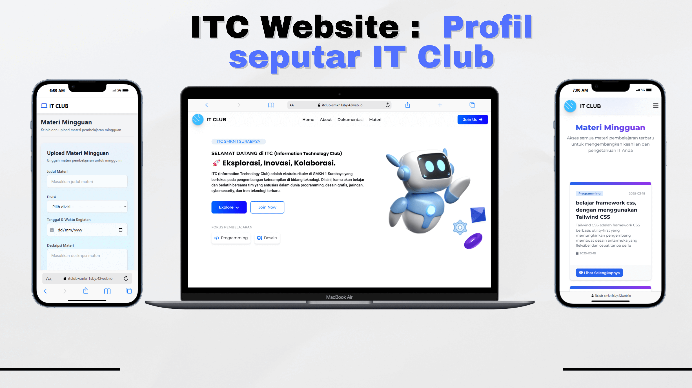
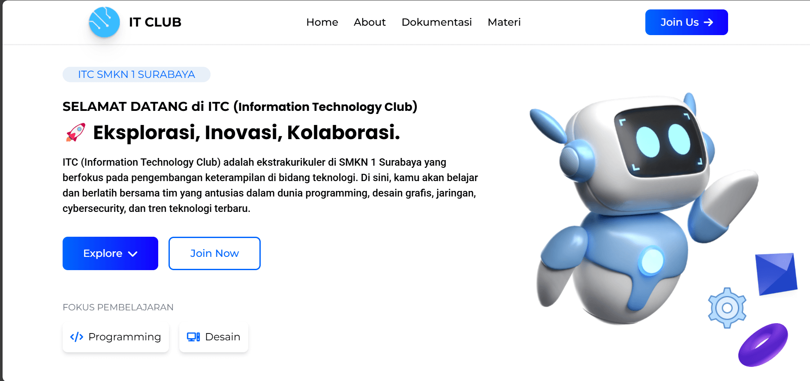
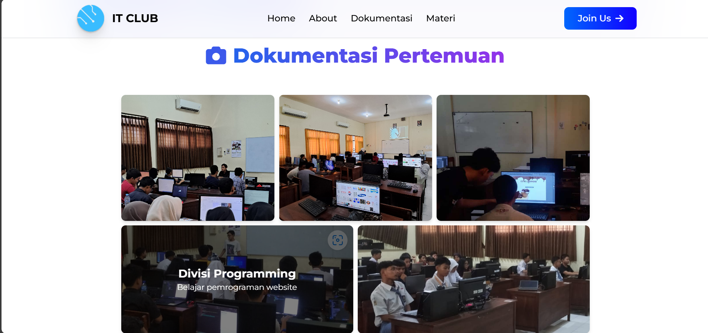
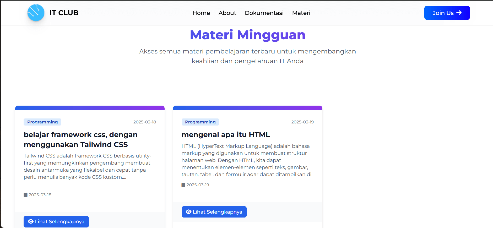
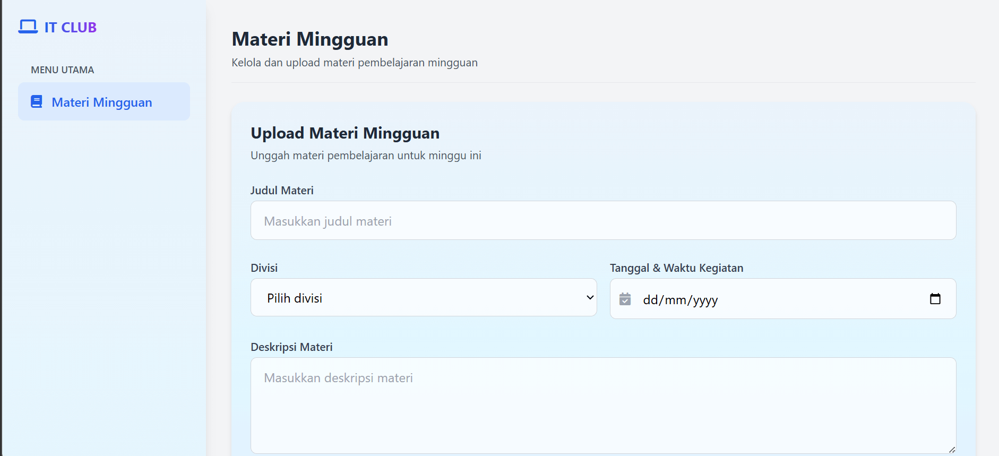

Detail Proyek
Kategori
Organisasi profil
Platform
Website
Peran
Frontend Developer
Bahasa
Javascript
Detail Proyek
Frontend
Tailwind, javascript
Durasi : 1 Bulan
Selesai : Maret, 2025
TailwindCSS
JavaScript
Kategori
Organisasi profil
Platform
Website
Peran
Frontend Developer
Bahasa
Javascript
Frontend
Tailwind, javascript
Website Profil IT Club (ITC) adalah sebuah platform digital yang dirancang untuk memperkenalkan, mendokumentasikan, dan mempermudah interaksi antara anggota, calon anggota, serta pembina IT Club SMKN 1 Surabaya. Website ini bertujuan menjadi pusat informasi resmi dan digitalisasi kegiatan ekstrakurikuler ITC.
Proyek ini dikerjakan oleh tim beranggotakan 2 orang. Saya bertanggung jawab penuh di bagian frontend untuk slicing design menjadi bentuk website
🎯 Tujuan Proyek
Menyediakan wadah informasi resmi seputar kegiatan IT Club, Meningkatkan
eksistensi ITC di dunia digital, Mempermudah pendaftaran anggota baru
secara online Menampilkan dokumentasi, menampilkan materi mingguan pertemuan ITC